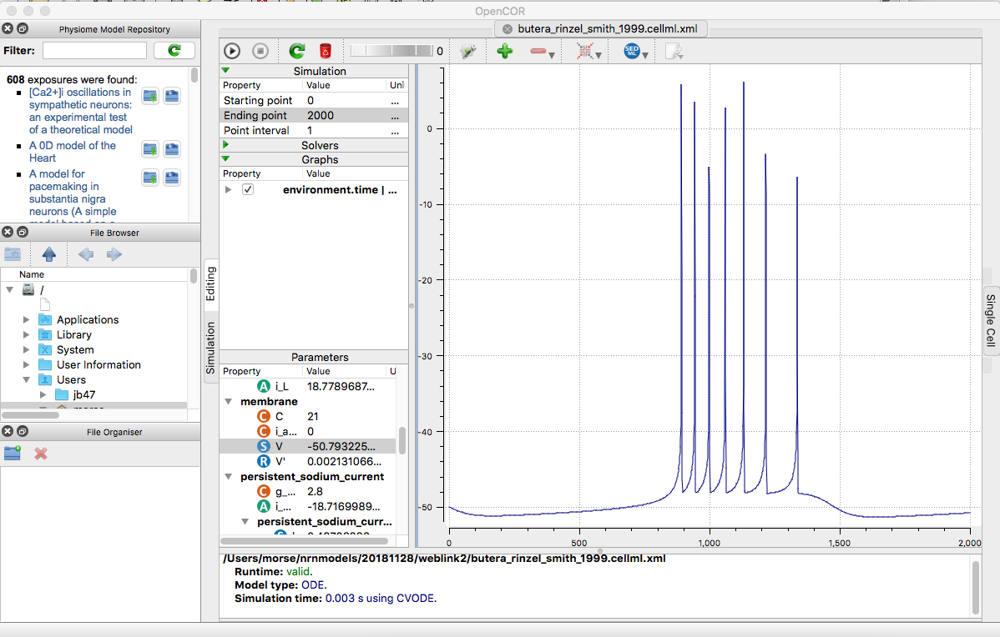
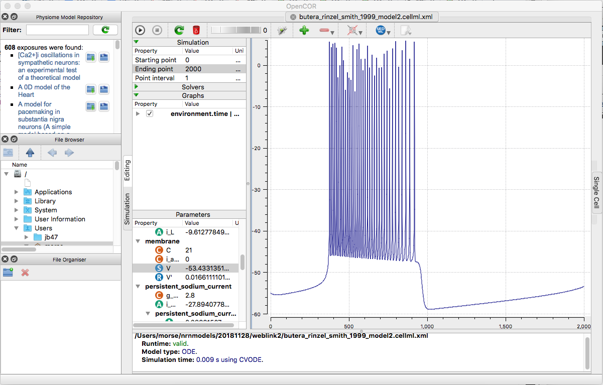

Models for the paper:
Butera RJ, Rinzel J, Smith JC (1999) Models of respiratory rhythm generation in the pre-Botzinger complex. I. Bursting pacemaker neurons. J Neurophysiol 82:382-97
have cellml versions available at cellml.org:
https://models.cellml.org/exposure/293a909eeeca07d0ca8ad583839eb0bc/butera_rinzel_smith_1999.cellml/view
which represents Figure 4 A3 where E_L=-57.5 mv

and
https://models.cellml.org/exposure/293a909eeeca07d0ca8ad583839eb0bc/butera_rinzel_smith_1999_model2.cellml/view

which “represents” Figure 5 A3 where E_L = -50 mv